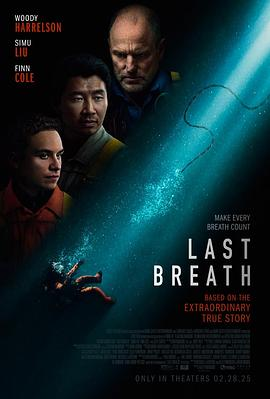

7.5
最后的呼吸
Last Breath
2025
美国
评分 7.5
导演:
亚力克斯·帕金森
演员:
伍迪·哈里森 / 刘思慕 / 芬恩·科尔 / 克利夫·柯蒂斯 / 马克·博纳尔 / 玛安娜·本灵
类型:
剧情,惊悚
剧情简介
深海之下，光线被彻底吞没，只剩下金属碰撞声与粗重呼吸在耳机里回荡。年轻潜水员克里斯（芬恩·科尔 饰）在进行海底输油管线修复时遭遇突发事故，被甩离安全区域，卡在结构塌陷的管道间。他的氧气表不断闪烁警告，只剩下十分钟，而海面上正刮着足以掀翻救援船只的狂风暴雨。与此同时，负责支援的两名队友邓肯（伍迪·哈里森 饰）与戴夫（刘思慕 饰）刚刚结束另一项任务，距离事故点至少还要三十分钟。他们听着对讲机里克里斯逐渐紊乱的呼吸，意识到这是一次几乎注定失败的救援，却仍毫不犹豫全速返航。船只被巨浪拍击得发出呻吟，雷雨如锤，他们必须在狂风中完成定位、压缩气瓶、准备深潜装备。影片以强烈的临场感呈现海底的压迫世界：视野被黑暗吞没，克里斯身上的灯光微弱闪烁，他的双手因为寒冷而颤抖，每一次尝试脱困都让金属块发出刺耳摩擦。孤独、恐惧与缺氧交织在一起，时间变得无比沉重。他一边用尽气力保持冷静，一边不断呼叫队友，那些微弱的声音仿佛从深渊中挣扎而来。海面上的邓肯和戴夫则与自然暴力对抗：暴雨下船身倾斜，他们在甲板上被浪花打得几乎站不稳，却仍然咬牙完成装备检查。邓肯用沙哑的声音重复对克里斯发出指令，试图让他坚持住；戴夫则不断计算时间，手指因为紧绷而僵硬。他们知道，这不仅是一场职责内的救援，更是对生命极限的挑战。《最后的呼吸》以逼真的物理环境、节奏紧绷的剪辑和角色真实的情绪，将“倒计时式救援”的刺激感推向极致。在深海与风暴之间，每个人都像被命运掐住喉咙，观众仿佛随着潜水员一起屏住了呼吸。这是一部关于希望、恐惧和人类意志在绝境中如何被逼出的故事，让人心脏紧绷到最后一刻。